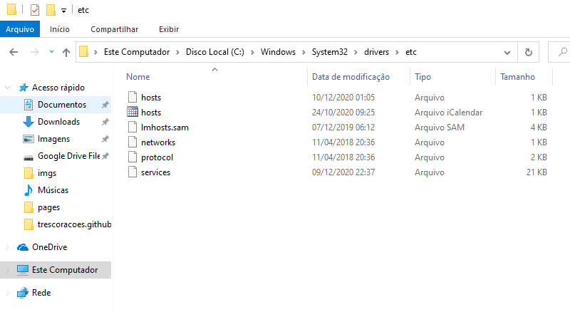
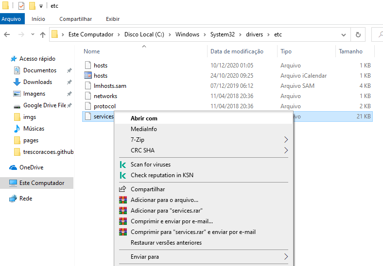
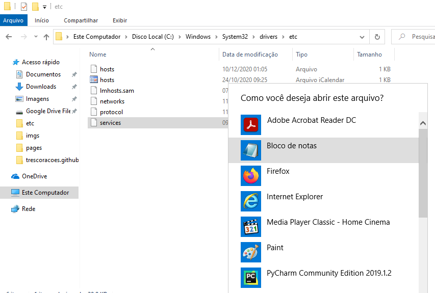
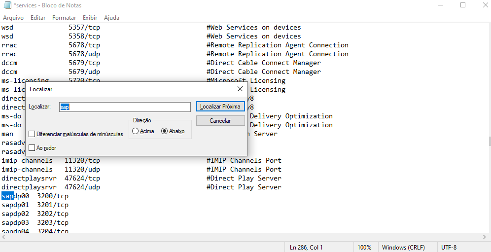
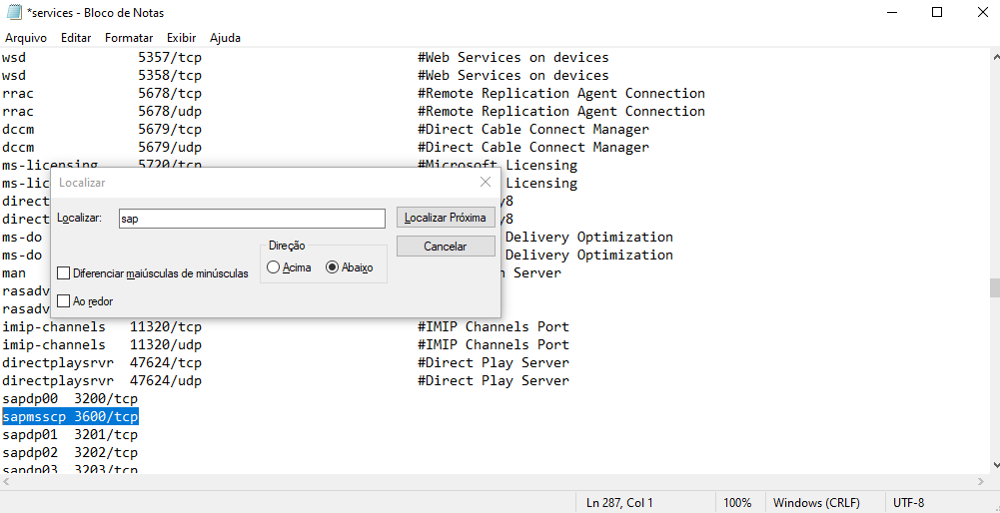

1. No explorer do Windows cole o seguinte endereço "C:\Windows\System32\drivers\etc"
2. Clique com o botão direito em cima do arquivo "services" e clique na opção "Abrir com"
3. E escolha o aplicativo Bloco de Notas
4. Com o arquivo services aberto no Bloco de Notas pressione as teclas CTRL + F, na caixa de pesquisa digite a palavra "sap" e aperte 3 vezes o enter
5. Coloque o cursor no final da linha, dê enter e digite: sapmsscp 3600/tcp
6. Pressione as teclas CTRL + S e então feche o arquivo.